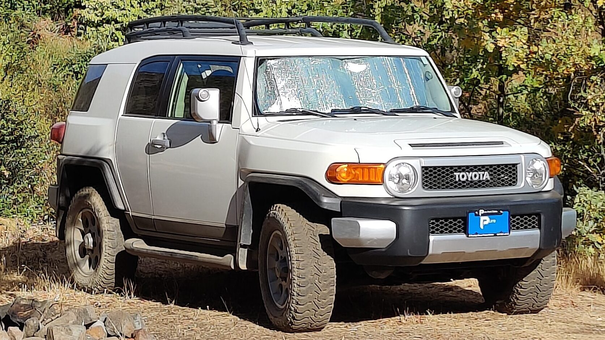

A field journal, not a feed.
Open Atlas is written for people who plan trips carefully, respect the places they visit, and want someone on the trail to tell them the truth about what's out there.

Travel writing with dirt under its fingernails.
Most of the outdoor internet is performance. Drone b-roll, empty trailheads that aren't actually empty, gear reviews written by people who opened the box once. Open Atlas exists to do the opposite of that.
We run one Toyota FJ Cruiser — the FJ13. We take trips. We come back with photos, notes, and specifics that help other people go out there themselves. We try not to over-promise, over-produce, or pretend we know more than we do.
The target reader is someone who opens a destination page to answer practical questions — where do I park, what's the surface, is cell service a factor, what will surprise me — and trusts that the person writing it has actually been there, recently, in real weather.
Four principles we don't break.
If a post, a route, or a piece of gear can't pass these four, it doesn't go on the site. It's the whole reason we run slow.
We'd rather write well about a place once than hype it three times.
How we got here.
-
2024 · summer
First road trip that became a project.
A slow west-coast loop from Oregon through northern California and back. Enough Blue Pool, lava tubes, and coastal switchbacks to notice that the best trip notes we had were our own.
-
2025 · Bend, OR
Acquired the FJ13.
Traded a commuter for a Toyota FJ Cruiser. Started the ongoing project of turning it into a trail-ready overlander without blowing out the point of the thing.
-
2026 · spring
Open Atlas launches.
The field journal goes public — Pacific Northwest first, with a directory structured by state and a rig page that doesn't pretend the upgrades are all done.
-
Next
Washington, then Alaska.
The Cascades and Olympic Peninsula in summer. Alaska is a multi-year goal — it has to be earned, not rushed.
Honesty & disclosures
Open Atlas uses affiliate links on a handful of gear pages. When we link out to a retailer and you buy something, we may earn a small commission at no additional cost to you. We only recommend gear we actually carry and use. If something doesn't make the cut after a season of use, we take it off the site.
We do not accept paid placements, sponsored posts, or gift-for-review arrangements. If that ever changes, it will be disclosed on every page the change affects.
Read the field notes. Use them. Send us better ones.